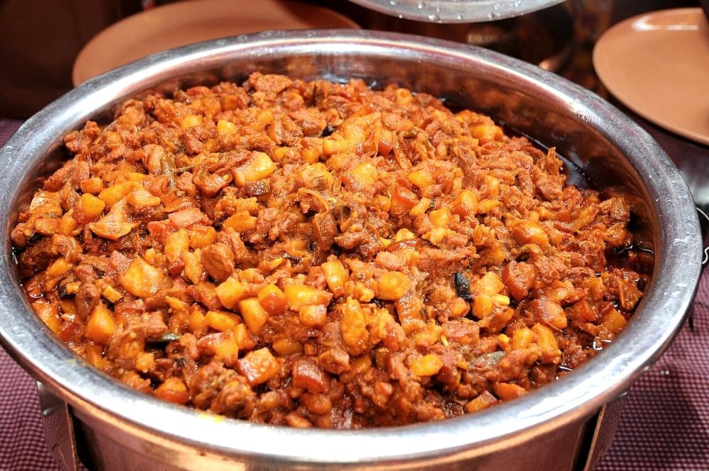

Contains: mustard
Checked against the ingredient list for ten allergens: milk, egg, fish, crustaceans, tree nuts, peanuts, sesame, mustard, soy and gluten. Brands vary, so read the label on anything new to you.
Ingredients
Quantities for 6.
- 1kg belly and shoulder with the fat on, cut into 2 inch cubes Porklean pork makes a thin, disappointing bafat
- 15 dried, stems snapped off Kashmiri Chilli
- 4 hot ones Dried Red Chilli
- 2 tbsp Coriander Powder
- 1 tsp Cumin Seeds
- 1 tsp Black Pepper
- 8 Cloves
- 2 inch stick Cinnamon
- 1/2 tsp Mustard Seeds
- 1 tsp Turmeric
- 12 cloves Garlic
- 1 1/2 inch piece Ginger
- 3 large, finely sliced Onion
- 4 tbsp Vinegarcoconut or palm vinegar is what is used at home
- 3 medium, quartered Potatothey soak up the fat and stretch the dishoptional
- 2 tbsp Neutral Oil
- 2 cups Water
- to taste Salt
Cookware
stovetop, pressure cooker, blender
Before you start
- Grind the bafat powder a day ahead if you can. Dry-roasted and jarred, it keeps for months and is the shortcut every Mangalorean Catholic kitchen relies on.
- Rub the pork with 1 tbsp of the vinegar, the turmeric and 2 tsp salt and leave it at least 2 hours, or overnight in the fridge.
- Take the pork out of the fridge 30 minutes before cooking.
Method
- Dry roast the chillies, coriander powder, cumin, pepper, cloves, cinnamon and mustard seeds separately over low heat until each smells toasted, 1 to 2 minutes each.Roast them separately. Cloves and mustard are done long before the chillies are, and one burnt spice ruins the batch.
- Cool completely and grind to a fine powder. This is your bafat masala.Grinding warm spices makes a damp, clumping powder that will not keep.
- Heat the oil in a heavy pot and fry the onion over medium heat for 12 minutes, until soft and evenly gold.
- Add the crushed garlic and ginger and cook 2 minutes more, until the raw edge is gone.
- Stir in 4 tbsp of the bafat masala and fry for 2 minutes with a splash of water so it does not catch.
- Add the marinated pork and turn it over high heat for 8 minutes, until the cubes are sealed and coated.
- Pour in 2 cups water, cover and simmer on low for 50 minutes, or pressure cook for 4 whistles and let the pressure fall on its own.The fat must render properly. If the pork is still firm at 50 minutes, give it another 15. This is not a dish to rush.
- Add the potatoes and cook uncovered 15 minutes, until they are tender and the gravy has thickened around them.
- Stir in the remaining 3 tbsp vinegar, check the salt, and simmer 5 minutes more.Vinegar goes in at the end. Boiled long it turns flat and loses the sharpness that cuts the fat.
- Rest the pot off the heat for 20 minutes before serving with sanna or plain rice.
Storage
Bafat genuinely improves for 3 to 4 days refrigerated as the vinegar and fat settle; reheat gently on the stovetop. It freezes well for 2 months. Store leftover bafat powder in a sealed jar away from light.
Nutrition Low estimate
High protein: 39+ g a serving, 39% of the calories
| Per serving351 g | Per 100 g | |
|---|---|---|
| Calories | 397+ kcal | 114+ kcal |
| Protein | 39.1+ g | 11+ g |
| Carbohydrate | 26.1+ g | 7+ g |
| of which sugars | 4.0+ g | 1+ g |
| Fibre | 4.3+ g | 1+ g |
| Fat | 14.7+ g | 4+ g |
| of which saturated | 3.8+ g | 1+ g |
| of which unsaturated | 9.6+ g | 3+ g |
The + means ingredients given to taste rather than by weight are counted as zero, so the true figure is a little higher than shown. A rough guide only. A large part of this ingredient list is given to taste rather than by weight, or much of what is weighed is not eaten. Ingredients given to taste rather than by weight are counted as zero, so the real figure is a little higher than this. The + says so. Estimated from raw ingredients using USDA FoodData Central. Cooking changes are not modelled, and added salt is excluded, so sodium is not given.
Written and checked against sources, not cooked in a test kitchen. Times, yields, allergens and nutrition are worked out rather than measured, so use your own judgement on doneness and on storing. More in About.